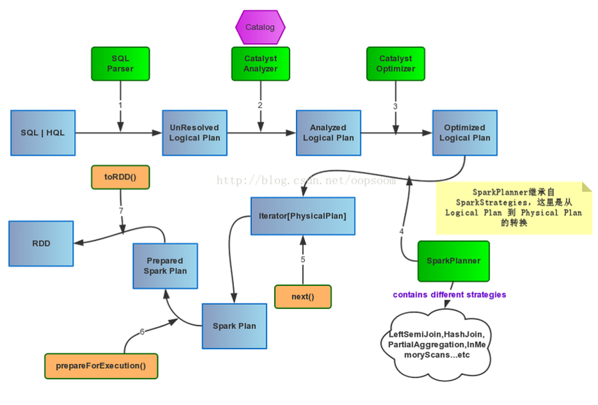

SqlContext的运行过程
SparkSQL有两个分支SqlContext和Hivecontext，SqlContext现在只支持sql语法解析器（SQL-92语法），而HiveContext现在既支持sql语法解析器又支持hivesql语法解析器，默认为hivesql语法解析器，用户可以通过配置切换成sql语法解析器，来运行hiveql不支持的语法。
SqlContext使用sqlContext.sql(sqlText)来提交用户sql语句，SqlContext首先会调用parserSql对sqlText进行语法分析，然后返回给用户SchemaRDD。SchemaRDD继承自SchemaRDDLike。
/**
* Executes a SQL query using Spark, returning the result as a SchemaRDD. The dialect that is
* used for SQL parsing can be configured with 'spark.sql.dialect'.
*
* @group userf
*/
def sql(sqlText: String): SchemaRDD = {
if (dialect == "sql") {
new SchemaRDD(this, parseSql(sqlText))
} else {
sys.error(s"Unsupported SQL dialect: $dialect")
}
}
protected[sql] val sqlParser = {
val fallback = new catalyst.SqlParser
new catalyst.SparkSQLParser(fallback(_))
}
class SchemaRDD(
@transient val sqlContext: SQLContext,
@transient val baseLogicalPlan: LogicalPlan)
extends RDD[Row](sqlContext.sparkContext, Nil) with SchemaRDDLike
parseSql首先会尝试dll语法解析，如果失败则进行sql语法解析。
protected[sql] def parseSql(sql: String): LogicalPlan = {
ddlParser(sql).getOrElse(sqlParser(sql))
}
然后调用SchemaRDDLike中的sqlContext.executePlan(baseLogicalPlan)来执行catalyst.SqlParser解析后生成的Unresolved LogicalPlan。
private[sql] trait SchemaRDDLike {
@transient def sqlContext: SQLContext
@transient val baseLogicalPlan: LogicalPlan
private[sql] def baseSchemaRDD: SchemaRDD
...
lazy val queryExecution = sqlContext.executePlan(baseLogicalPlan)
...
}
接着executePlan会调用QueryExecution
protected[sql] def executePlan(plan: LogicalPlan): this.QueryExecution =
new this.QueryExecution { val logical = plan }
先看看QueryExecution的代码
/**
* :: DeveloperApi ::
* The primary workflow for executing relational queries using Spark. Designed to allow easy
* access to the intermediate phases of query execution for developers.
*/
@DeveloperApi
protected abstract class QueryExecution {
def logical: LogicalPlan
lazy val analyzed = ExtractPythonUdfs(analyzer(logical))
lazy val withCachedData = useCachedData(analyzed)
lazy val optimizedPlan = optimizer(withCachedData)
// TODO: Don't just pick the first one...
lazy val sparkPlan = {
SparkPlan.currentContext.set(self)
planner(optimizedPlan).next()
}
// executedPlan should not be used to initialize any SparkPlan. It should be
// only used for execution.
lazy val executedPlan: SparkPlan = prepareForExecution(sparkPlan)
/** Internal version of the RDD. Avoids copies and has no schema */
lazy val toRdd: RDD[Row] = executedPlan.execute()
...
}
QueryExecution的执行如下
- 使用analyzer结合数据数据字典（catalog）进行绑定，生成resolved LogicalPlan
- 处理UDF
- 处理Cache
- 使用optimizer对resolved LogicalPlan进行优化，生成optimized LogicalPlan
- 使用SparkPlan将LogicalPlan转换成PhysicalPlan
- 使用prepareForExecution()将PhysicalPlan转换成可执行物理计划
- 使用execute()执行可执行物理计划
- 生成SchemaRDD
